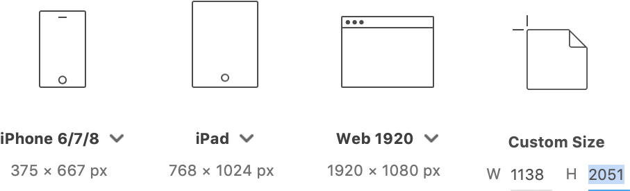

Exercises
Exercise A: Grid Exploration (5%)
Due week 2: January 16
You may use Adobe XD or Sketch to complete this exercise. Instructions are provided for Adobe XD, but a similar process should work with Sketch.
Instructions
Download the Exercise A starter screenshots taken from the Someone Shoe website.
Create a new document in Adobe XD with the following settings:

- Custom Size
- Width: 1138
- Height: 2051
Make sure your layers panel is visible on the left by clicking the
Layersicon in the bottom left corner (⌘ + Y).Create 2 additional artboards by clicking on the newly created artboard (
custom - 1) and selecting Edit > Duplicate (⌘ + D) twice.Choose File > Import to place the three screenshots on individual artboards. Scale each image to 50% so it fits with width of the artboard. Use the artboard tool (click the artboard icon in the toolbar (A), then select the artboard name on your canvas) to adjust the height of each artboard so it matches the height of the screenshot.
Use the Rectangle tool (R) and draw rectangles to mark all the columns. Make the rectangles fill red (RGB: 255, 0, 0 or HEX: #FF0000) with 50% opacity and no border.
Using the Transform palette, carefully measure each of the column widths, the gutter widths and the total width of the site content (not the width of the artboard). Using the Text tool (T), clearly type the measurements in pixels and percentages in the top left corner or each artboard, over the red column rectangles (font: Helvetica Neue, 28pt, white).
Use the following formula to calculate percentages for each item:
item width ÷ total site width × 100(round percentages to 1 decimal point)
Hint: If you have done this correctly, all pixel dimensions should be whole numbers (no decimals) and the percentages of all your columns plus all your gutters should add up to 100% exactly.
Using the Rectangle tool (M) with a fill colour of 50% grey and no border, mark the elements on all the screenshots. Indicate images and videos by diagonal lines (use Line tool (L), with 2pt white border) crossing at the centre of each grey element.
Using the Text tool (T) (font: Helvetica Neue, 18pt, black), label all the elements that you identified in the last step (e.g.
image,navigation,heading, etc.).Create a single PDF document with 2 pages for each artboard (6 pages total). The 2 pages should have these layers visible:
- Page 1: Site Images, Grid Rectangles and Grid Dimensions
- Page 2: Site Images, Content Rectangles and Content Labels
Make sure to optimize your PDF file size. The final PDF should be less than 5MB in size.
Save your document using the following naming convention: Lab#-LastnameFirstinitial-ExeA.pdf (e.g.
Lab1-BuchananP-ExeA.pdf). Submit the final PDF document according to the class work submission process.